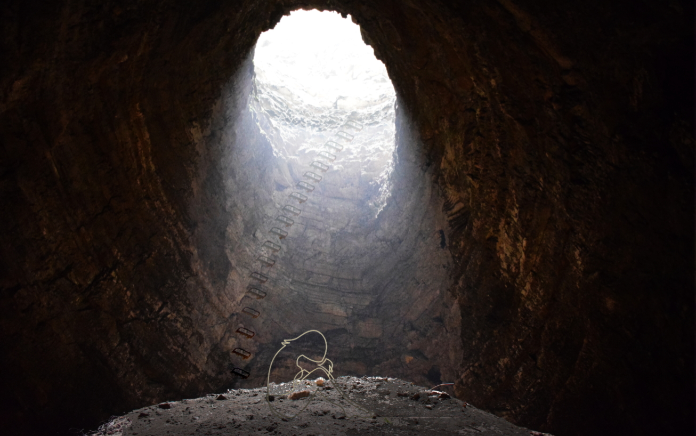

במהלך הסמסטר אני מוכרחה להודות שמאוד נהניתי משני הקורסים האלו - עד שהגענו למטלה הזו
ולא כי היא יוצאת דופן, פשוט הרצון למצוא משהו מדויק ולהצליח לעצב בדיוק כפי שרצינו
בסופו של דבר הגענו אל התוצאה הבאה

לאחר המון התלבטויות בחרנו ליצור תמונה המראה את הדרך לפתרון
ומנגד את חוסר הרצון לראות את אותה הדרך